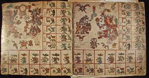

The books of the Aztecs were entirely pictorial. Events, actions, dates, names, and ideas were all conveyed through conventionalized images. Pictograms resembled or were visually associated with the ideas, things, or actions represented (house, tree, movement). Ideograms conveyed larger concepts (town, year, day). Logograms were word-based images. This image-based system was a composite and flexible one in which pictograms, ideograms and logograms might all be combined in a single image. As the Aztecs conquered peoples from different language groups, this efficient pictorial system made it possible for the educated to read documents without having a common spoken language.
Wisdom was considered to reside in the accumulated knowledge of the educated nobility and priests and was thought to be best expressed orally through eloquent speeches learned in schools for the nobility (calmecac). Sixteenth-century eye-witness accounts tell us that the books were “performed” (recited or sung) to convey their wealth of knowledge and meaning.
The Spanish Franciscan friar, Father Motolinía, described five types of preconquest books, all written in pictures and symbols: histories; ceremonies; and three types of divinatory calendars used to determine the future, to name children, and to indicate the most propitious times for rites and ceremonies. There were three formats for books and painted knowledge: the screenfold (a long strip of native bark paper [amatl] folded accordion style), the tira (an unfolded long strip of paper), and the lienzo (a large single sheet usually of cloth) on which the images were painted. No undisputed preconquest Aztec documents survive, although there are a large number of indigenous pictorial documents from the colonial period.
Loan courtesy of Ellen T. Baird.
|  |
A screenfold manuscript on amatl (bark paper), the Codex Borbonicus is a divinatory almanac (tonalamatl/day book) used to divine the future for both practical and ritual purposes. Each page represents a thirteen-day “week” in a 260 day calendar; the ruling deities and symbols associated with the week are prominently displayed. In the boxes along the edge of each page, the named and numbered days (1 to 13 dots) of the week are accompanied by their governing supernaturals (birds and deities). A masterpiece of Aztec style, the Borbonicus is believed to have been made after the arrival of the Spanish. Note the Spanish words identifying the pictorial text of numbered days.